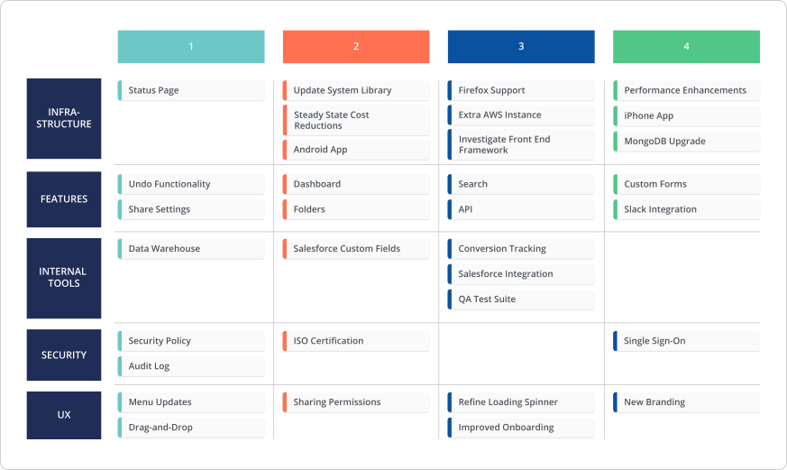

The term ‘technology roadmap’ is broad in its application, so we created three distinct examples to showcase its versatility.
While one of the common applications of a technology roadmap is to plan out the administration and evolution of an organization’s technology stack, the technology roadmap can go beyond your common “IT systems roadmap.”
Some organizations use a technology roadmap to strategize how their technology initiatives will help them achieve their own research and development goals. Others may use this roadmap to visualize and streamline internal tech processes and systems—like information security audits and organizing employee hardware. Or maybe you’re just drowning in a crapload of tools and tech and a roadmap can get you sorted.
No matter your use case, a technology roadmap is a flexible enough document (at least it should be!) that can be pivoted to apply to your specific scenario. Below we introduce three technology roadmap examples that demonstrate the adaptability of this roadmap type and that will help you kickstart your own technology roadmap. (P.S. All these roadmaps are available in our template library that you can access right here.)
Need more examples? We've got 7 more in our free guide to technology roadmaps. Download it here.
IT roadmap
We’d say this technology roadmap example is pretty similar to an internal IT systems roadmap. Both an IT and internal IT systems roadmap explicitly lay out how a business plans on building and maintaining internal technology solutions. But with an IT roadmap, expect more emphasis on how the IT initiatives will support the company-wide vision. It’s less, “Who’s owning what IT project?” and more, “What’s the business value of this IT initiative?”
Think of it as a melding of your business and IT strategies; relaying to the rest of the organization how your IT strategy aligns with your business goals. For example, a SaaS company that wants to convert 30% of their free customer base to paid this year might require a marketing automation system so that marketing can nurture and upsell free users. On top of that, sales and CS might need a new, more powerful CRM system to keep up with the influx of new customers and keep them happy. An IT roadmap can align all these teams on all that “mumbo-jumbo” and, well, make it not “mumbo-jumbo” but rather clear.
An IT roadmap answers questions like:
- What types of IT initiatives will you be rolling out in such and such timeframe?
- What business goal will this IT initiative help achieve?
- How will this IT initiative (whether it’s an app, new technology, internal process, etc.) help us ultimately grow as an organization?
Who should use this type of roadmap?
You can expect your org’s technology leaders to implement and apply this roadmap. Your CTOs, CIOs, IT managers. Not only does this roadmap help tech leaders attain company-wide alignment on their strategy, but it lets these leaders be steps ahead of technological shifts at the organization. With this roadmap, planning ahead and prioritization of IT projects becomes more feasible and scrambling to put out IT-incited fires becomes less of a reality.
What does an IT roadmap look like?
Since it’s meant to be an organization-wide doc, your IT roadmap will probably have a lot of eyes on it. A lot of eyes = a lot of questions. One of the main questions: “What’s the status on x?” A Swimlane View of our IT roadmap answers that question quickly by organizing the big IT projects into Backlog, In Design, In Progress and Completed. This way if you or any other departments need a refresher on the status of certain initiatives, they have a consistent reference point.
If the questions and pushback you receive revolve around the question of “when,” flipping your IT roadmap over to a Timeline View can provide simple answers. This view communicates how everything will roll out across upcoming months, quarters or years.
This IT roadmap is available as a template in our library. Get it now. And make it your own.
Or get even more granular by pivoting by theme and discover where most of your IT efforts are allocated. And from there, call the shots in terms of redistribution or resourcing. For example, in the above roadmap you can see integrations seems to be a hefty organizational goal this year, whereas improvement-related projects don’t appear to be as prominent.
Based on this roadmap, you might allocate more resources from your improvement projects to support upcoming integrations because you know the team’s putting more emphasis on rolling out integrations than tech improvements. Again, unlike your internal IT systems roadmap, an IT roadmap is not about listing who’s owning what IT project; it’s about communicating how these IT initiatives fulfill your business goals.
Major IT milestones can also be thrown on to the roadmap to demonstrate when goals are expected to be met. Not only will this show progress, but it’ll get all stakeholders working towards the same timeline.
Application roadmap
With an app for almost every part of a business workflow, it can get overwhelming to remember what to sign into, when and why (remembering all your passwords is already hard enough). An application roadmap is a technology roadmap example designed for visualizing the abundance of apps that an organization integrates within their workflow, so that smarter decisions and prioritization can be made regarding the applications portfolio.
As businesses evolve, implementing the right tools becomes increasingly important towards maximizing business growth. An application roadmap removes any uncertainty around which apps should be implemented, which team is using what and which business areas are impacted by what. Bringing clarity to complex application infrastructures, an application roadmap is ideal for getting the best value from each application within your workflow. Plus, it helps teams prioritize which app implementation will happen when.
Who should use this type of roadmap?
As a tech administrator, the application roadmap falls under your umbrella. Whether you’re an operations manager or an IT team member, you’re the best individual to oversee an applications roadmap since you have the deepest insight into your application portfolio. As with any technology roadmap (or roadmap, in general), getting input from each stakeholder team ensures you get the application stack in order.
What does an application roadmap look like?
If you’re balancing a whole slew of applications and need to get nitty-gritty about the “when” and “why,” a Timeline View of your application roadmap is most effective. Mapping out how your application portfolio will be upgraded and maintained over time, this view of an application roadmap is a simple way to update stakeholders on when (and where) new tools or upgrades are required.
If you’re more process-oriented (and time is less of a pressing concern) then the Swimlane View may be more your speed.
Create your own application roadmap now with our ready-to-use application roadmap template.
Progress is the primary component of this technology roadmap example, as applications are organized into their respective stages of evaluation, implementation and maintenance.
Development roadmap
The development roadmap is probably the most in-the-weeds technology roadmap example, as this is the roadmap based only on your dev team’s work. Highlighting the technology initiatives, epics and features all set up in the engineering pipeline, the development roadmap communicates a dev team’s primary goals.
So, while a development roadmap gets more in-depth than other technology roadmap examples on this list, it still is a high-level approach. That means this isn’t the place to track your issues or projects; it’s the place for dev teams to share what the heck their team is actually working towards.
Who should use this type of roadmap?
This one’s for all the engineering leaders; whoever is overseeing the development team(s) and communicating with the rest of the organization regarding the dev pipeline. Those are the people who should have their hands on this roadmap, as they can speak best to what’s upcoming in the workflow, and any tradeoffs that must be considered when changes are requested.
What does a development roadmap look like?
Since the development roadmap is all about the dev workflow (and agile is the status quo at tech companies), you can organize your development roadmap by sprints. By categorizing your features and projects based on which sprint they’ll be developed in, you can portray a clearer picture to the rest of your organization about when they can expect what.

But that’s not the only way you can represent your development roadmap in a Swimlane View. Structuring your roadmap so it showcases which projects and features are ready for dev, makes it superrr clear to anyone asking questions about the status of certain initiatives. (This one’s for anyone who doesn’t want to get incessantly pinged when something is in development).
Granted, the bigger your organization gets, the more likely time will have to be incorporated in your roadmap. Presenting your development roadmap in a Timeline View lets you showcase the “when” to the rest of your organization and manage their expectations of the dev workflow. But just remember if you are using a Timeline, reiterate that it’s a statement of intent and therefore can (and probably will) change.
Psstt... this roadmap ☝️ was created in Roadmunk. Get the ready-to-use development template free.